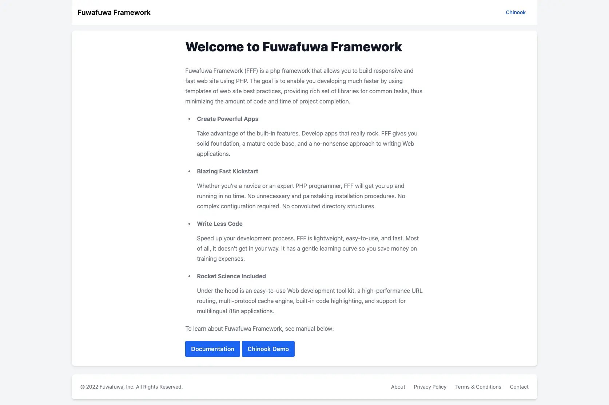

Getting Started: Installation
Fuwafuwa Framework is designed for a smooth installation process. This guide outlines the various methods for setting up your development environment.
Prerequisites
PHP 8.0.x
Optional
Node.js and npm/yarn (for Tailwind CSS customization) SSH access with rsync (for server deployment)
Installation Methods
1. Local Development Server
- Unzip the Fuwafuwa Framework package.
- Navigate to the application folder in your terminal.
- Run the following command:
php -S localhost:8080Your application will be accessible at http://localhost:8080 in your web browser.
2. Web Hosting
A. Uploading via File ManagerUpload the entire Fuwafuwa Framework package content to your web hosting folder. Access the application directly through your web browser.
B. Uploading via SSH with rsync(Assuming your hosting provider offers SSH with rsync) Run the following command from the application folder in your terminal:
sh sync.sh -i3. Configuring for Web Server
Fuwafuwa Framework is compatible with various web server environments. Here's an overview of the configuration steps for common setups:
A. Apache/LiteSpeedApache is the assumed platform for much of the documentation. The default configuration should work out of the box.
B. NginxFor Nginx servers, incorporate the following configuration into your server block (replace ip_address:port with your specific FastCGI PHP settings):
server {
root /var/www/html;
location / {
index index.php index.html index.htm;
try_files $uri /index.php?$query_string;
}
location ~ \.php$ {
fastcgi_pass ip_address:port;
fastcgi_index index.php;
fastcgi_param SCRIPT_FILENAME $document_root$fastcgi_script_name;
include fastcgi_params;
}
}
C. Lighttpd
Lighttpd configuration follows a similar approach:
$HTTP["host"] =~ "www\.example\.com$" {
url.rewrite-once = ( "^/(.*?)(\?.+)?$"=>"/index.php/$1?$2" )
server.error-handler-404 = "/index.php"
}
D. IIS
For IIS, you'll need to install the URL rewrite module and the corresponding .NET framework for your
Windows version. Additionally, create a file named web.config in your application root with the
following content (specific details omitted for brevity).
<configuration>
<system.webServer>
<rewrite>
<rules>
<rule name="Application" stopProcessing="true">
<match url=".*" ignoreCase="false" />
<conditions logicalGrouping="MatchAll">
<add input="{REQUEST_FILENAME}" matchType="IsFile" ignoreCase="false" negate="true" />
<add input="{REQUEST_FILENAME}" matchType="IsDirectory" ignoreCase="false" negate="true" />
</conditions>
<action type="Rewrite" url="index.php" appendQueryString="true" />
</rule>
</rules>
</rewrite>
</system.webServer>
</configuration>
Additional Notes
- Fuwafuwa Framework doesn't require a root folder placement on your hosting. You can place it within any subfolder.
- Node.js and npm/yarn are only necessary if you intend to modify styles using Tailwind CSS. The provided theme doesn't require this step.
